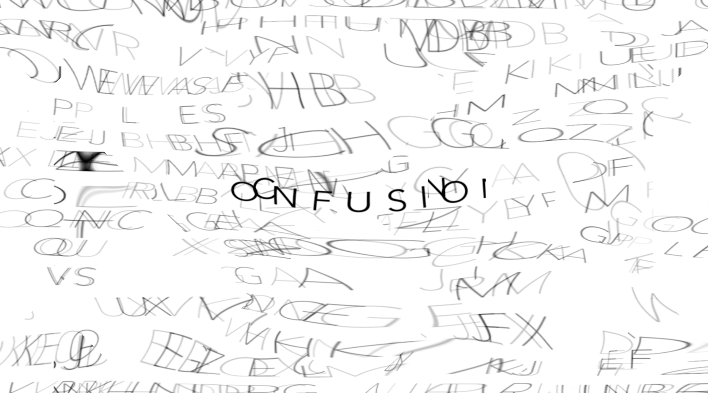
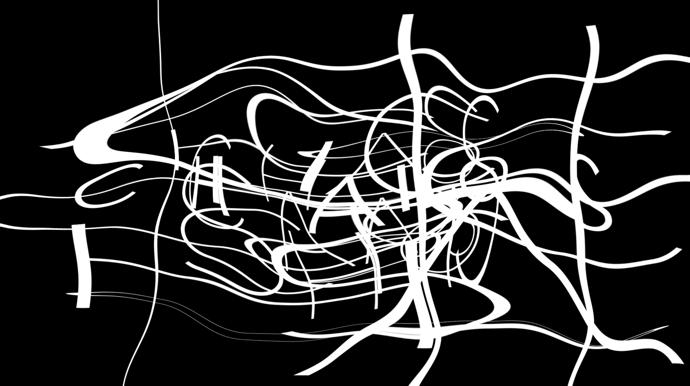
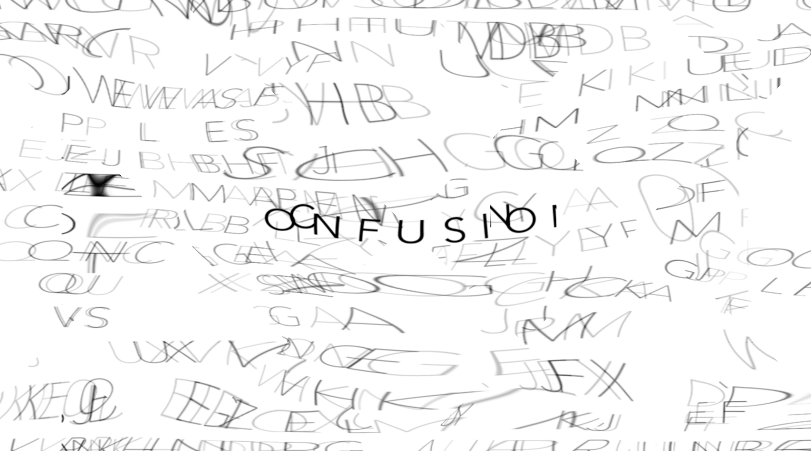
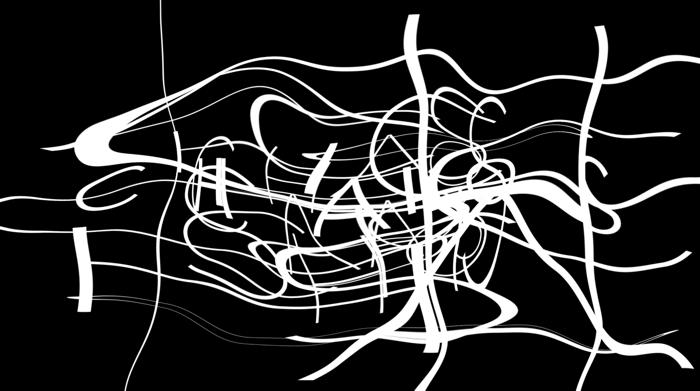

Babeldom 4D
Kinetic Typography, 2020
This is an experimental 4D piece that is part of a semester-long series of projects that displays the conceptual aspects and qualities of a word of our choosing, which is 'Babeldom'.
Babeldom:
- A confused mix of voices, languages, or words and ideas.
- A state [or condition] of noisy confusion and chaotic activity.
- A multiplicity of mutually unintelligible languages.
This short film explores the chaotic and confusing aspect of the word 'Babeldom'. Using Adobe AfterEffects, chaos and confusion are highlighted in this film through kinetic typography that visualize the unintelligible mass of human voices, sound, and music ("Penderecki: Polymorphia" by Krzysztof Penderecki and Jonny Greenwood).
 



For a more in-depth look at this piece and other projects in the series based on the word 'Babeldom', go on this link.